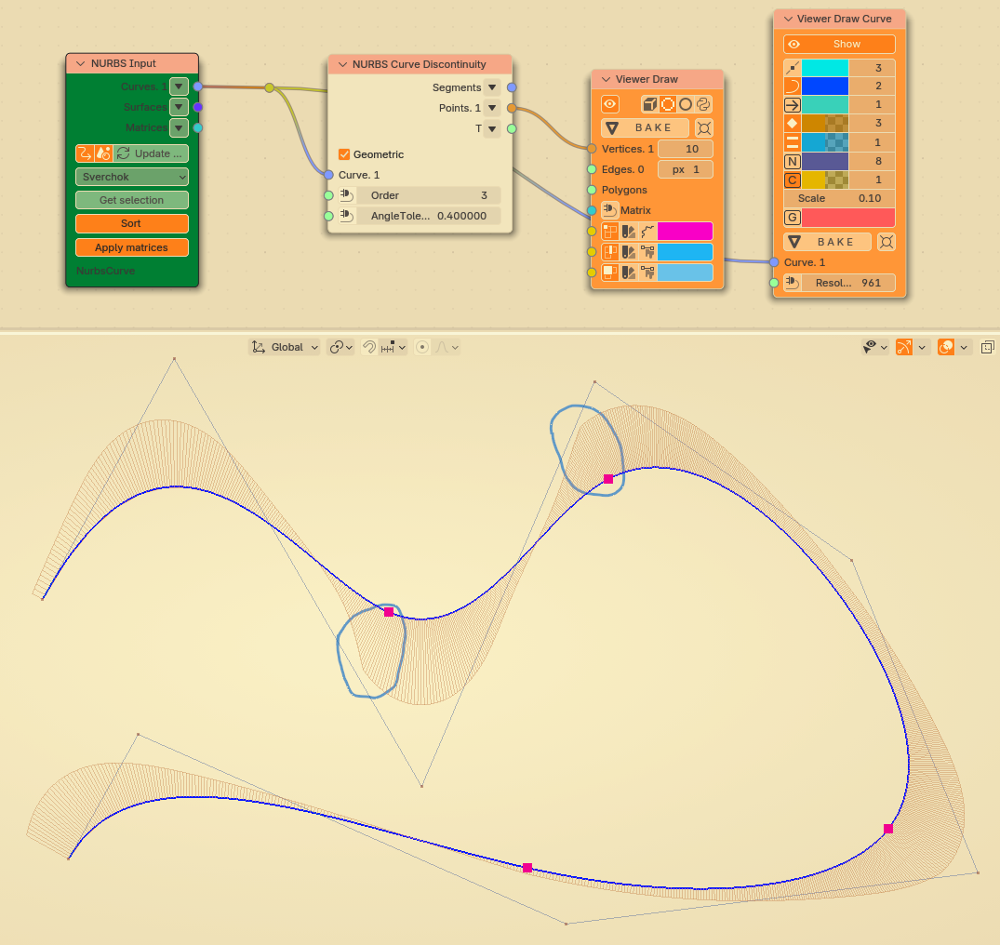

NURBS Curve Discontinuity¶
Functionality¶
Given a NURBS (or NURBS-like) curve, this node finds it’s “fracture”, or “discontinuity”, points.
Discontinuity points of 1st order are points where curve changes is not smooth, i.e. it changes it’s direction suddenly; more precisely, it’s points where curve derivative (tangent) is not continuous.
Discontinuity points of 2nd order are points where curve’s 2nd derivative is not continuous;
Discontinuity points of 3rd order are points where curve’s 3rd derivative is not continuous.
This node can find discontinuities of two kinds:
Geometric discontinuity is a point where curve derivative (tangent vector or derivative vector of higher order) changes it’s direction suddenly; it does not matter if it changes it’s length or not.
Parametric discontinuity is a point where curve derivative suddenly changes it’s direction or length.
Geometric discontinuity of 1st order is clearly visible: it’s a “sharp corner” on a curve. Parametric discontinuity may not be visible, if tangent direction is not changed; in such a case, parametric discontinuity matters only for the parametrization of the curve.
Inputs¶
This node has the following inputs:
Curve. The curve to be analyzed. This input is mandatory.
Order. Discontinuity order. Possible values are 1, 2 and 3. The default value is 1.
AngleTolerance. Minimum angle, for which curve’s derivative (tangent or derivative vector of higher order) should change it’s direction, in order for such point to be considered as discontinuity. The value is specified in radians. The default value is 1e-6 (one per million).
AmplitudeTolerance. This input is available only when Geometric parameter is not checked. Minimum value, for which curve’s derivative vector should change it’s length, in order for such point to be considered as discontinuity. The default value is 1e-6 (one per million).
Parameters¶
This node has the following parameter:
Geometric. If checked, the node searches for geometric discontinuities only. Otherwise, it searches for parametric discontinuities. Checked by default.
Outputs¶
This node has the following outputs:
Segments. Segments, to which the curve is split by discontinuity points.
Points. Discontinuity points on the curve.
T. Curve’s T parameter values for discontinuity points.
Examples of usage¶
Discontinuity of 1st curve is visible as a break (crisp) on the curve. Here we check only for “Geometric” continuity, which means that we only check directions of curve tangents, but do not check tangent lengths.

Here we check for “parametric” continuity instead of “geometric”. Now we see two points of discontinuity. Point 1 is the same; at point 2, with curve’s control polygon displayed we can see that control points are not symmetric around this point, in this case this means that curve tangent vector at the right of this point have much more length, than curve tangent to the left of this point.

Since this curve is composed of several Bezier segments, in all points where these segments are “glued” together there are points of discontinuity of 2nd order. If you look at curvature comb near these points, you can see that it can be discontinuous (“broken”). I.e., at these points curve’s curvature may change suddenly.

This is a generic NURBS curve. It does not have discontinuity points of 1st or 2nd order. But it has discontinuity points of 3rd order; At these points the curve itself looks pretty smooth, but if you look closely at curvature comb you can see that, albeit continuous, curvature comb is not smooth at these points.

{kind=link}